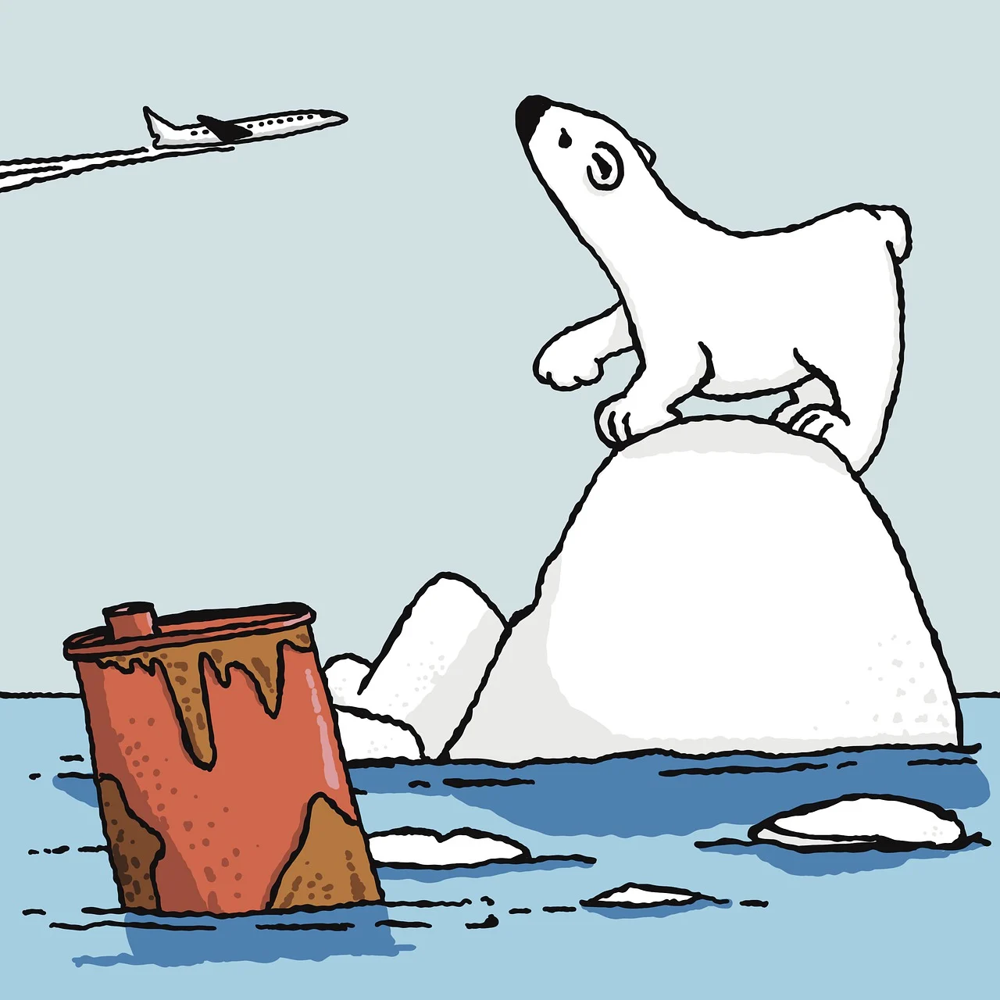

🌱 Zöld szemlélet
A zöld gondolkodás célja, hogy környezettudatosabban éljünk, csökkentsük az ökológiai lábnyomunkat, és jobban odafigyeljünk a természetre.

♻️ Újrahasznosítás
Az újrahasznosítás segít csökkenteni a hulladék mennyiségét, és új életet ad a régi tárgyaknak. Műanyag, papír, üveg és fém mind újrahasznosítható!

🛢️ Környezetszennyezés
A légszennyezés, vízszennyezés és a túlzott szeméttermelés komoly problémát jelent a bolygónk számára. Itt az ideje változtatni!
